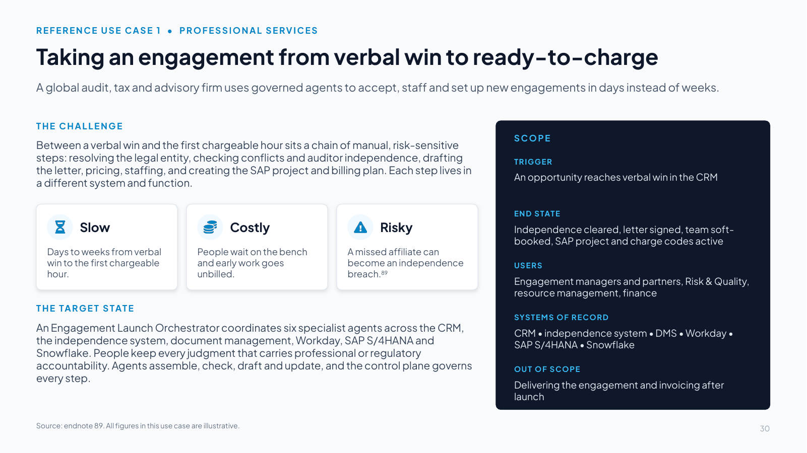
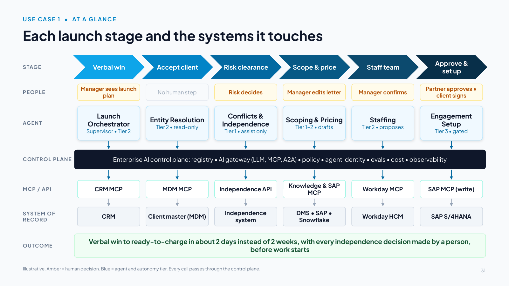
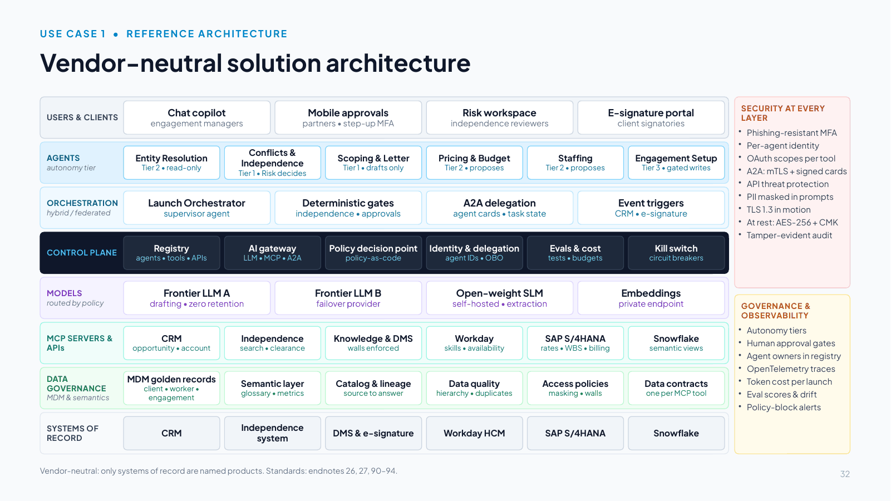
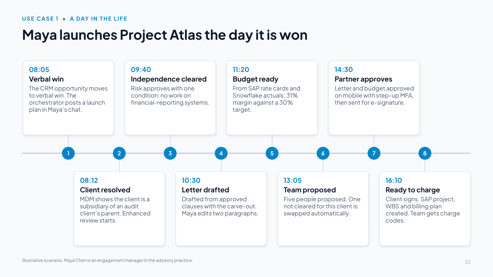
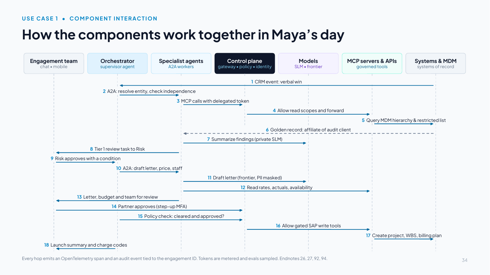
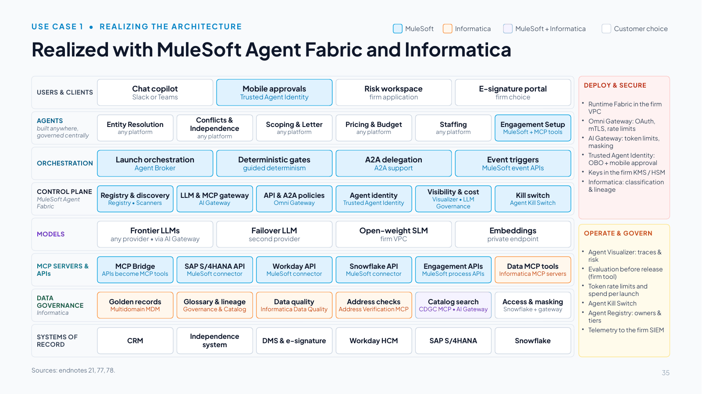
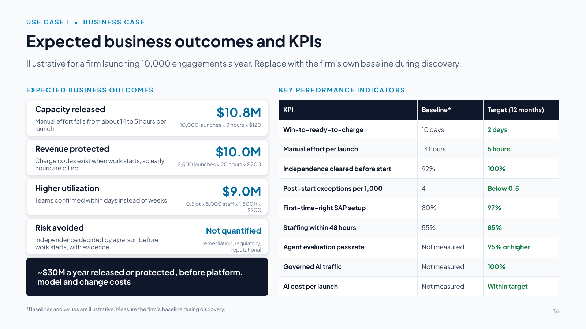
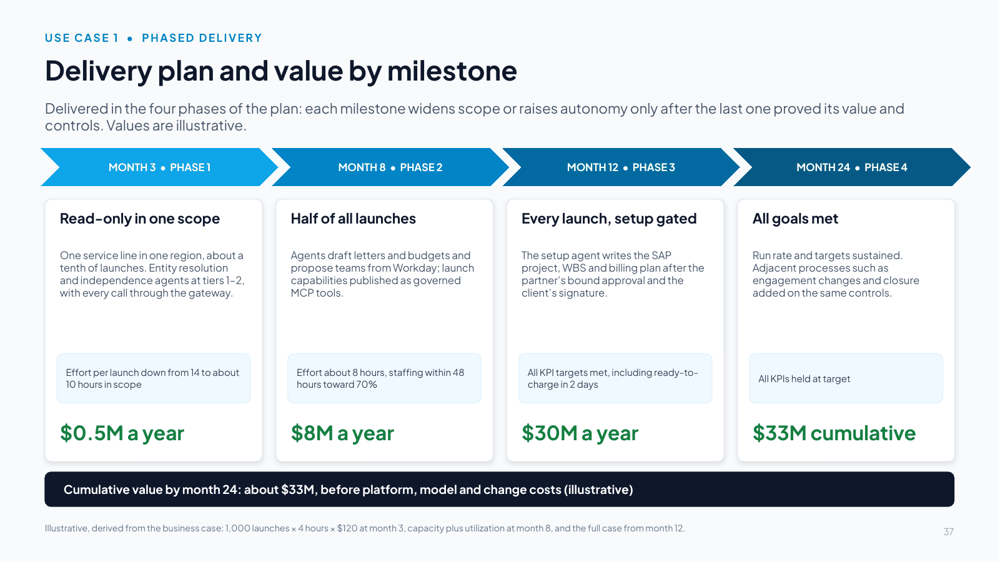
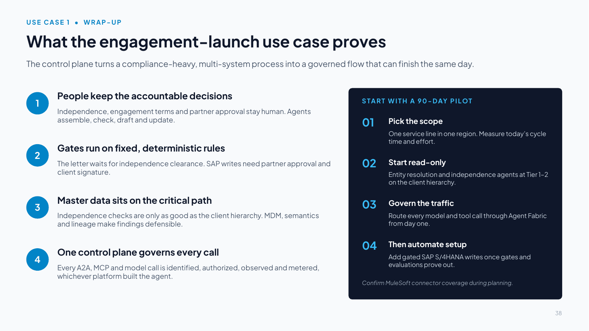

Slides 30–38
Use case 1: Professional services engagement launch
Slide 30 Taking an engagement from verbal win to ready-to-charge

Download slide 30 as a PowerPoint file (.pptx, 82 KB, with speaker notes)
Slide text
A global audit, tax and advisory firm uses governed agents to accept, staff and set up new engagements in days instead of weeks.
THE CHALLENGE
Between a verbal win and the first chargeable hour sits a chain of manual, risk-sensitive steps: resolving the legal entity, checking conflicts and auditor independence, drafting the letter, pricing, staffing, and creating the SAP project and billing plan. Each step lives in a different system and function.
Slow
Days to weeks from verbal win to the first chargeable hour.
Costly
People wait on the bench and early work goes unbilled.
Risky
A missed affiliate can become an independence breach.89
THE TARGET STATE
An Engagement Launch Orchestrator coordinates six specialist agents across the CRM, the independence system, document management, Workday, SAP S/4HANA and Snowflake. People keep every judgment that carries professional or regulatory accountability. Agents assemble, check, draft and update, and the control plane governs every step.
SCOPE
TRIGGER
An opportunity reaches verbal win in the CRM
END STATE
Independence cleared, letter signed, team soft-booked, SAP project and charge codes active
USERS
Engagement managers and partners, Risk & Quality, resource management, finance
SYSTEMS OF RECORD
CRM • independence system • DMS • Workday • SAP S/4HANA • Snowflake
OUT OF SCOPE
Delivering the engagement and invoicing after launch
Source: endnote 89. All figures in this use case are illustrative.
Speaker notes
Talk track (two minutes): This is the first of three reference use cases that show the control plane working end to end on a real process. It is written for a global audit, tax and advisory firm, and the architecture is vendor-neutral except for the transactional systems the process already runs on: a CRM, SAP S/4HANA, Workday and Snowflake.
The problem: between a verbal win and the first chargeable hour sits a chain of manual, risk-sensitive steps owned by different functions in different systems. Delays leave people on the bench and let early work go unbilled, and a missed affiliate relationship can become an auditor-independence breach, with regulatory consequences, when the client or its parent is an audit client [89].
In the target state, an Engagement Launch Orchestrator coordinates six specialist agents: Entity Resolution, Conflicts & Independence, Scoping & Letter, Pricing & Budget, Staffing and Engagement Setup. People keep every judgment that carries professional or regulatory accountability (independence decisions, engagement terms, partner approval). Agents do the assembly, checking, drafting and system updates, and the control plane makes every step governed, observable and auditable.
All figures in this use case are illustrative. Replace them with the firm's own baseline during discovery. The companion handbook (Section 11) has the full detail.
Slide 31 Each launch stage and the systems it touches

Download slide 31 as a PowerPoint file (.pptx, 64 KB, with speaker notes)
Slide text
STAGE
PEOPLE
AGENT
CONTROL PLANE
MCP / API
SYSTEM OF RECORD
OUTCOME
Verbal win
Manager sees launch plan
Launch Orchestrator
Supervisor • Tier 2
CRM MCP
CRM
Accept client
No human step
Entity Resolution
Tier 2 • read-only
MDM MCP
Client master (MDM)
Risk clearance
Risk decides
Conflicts & Independence
Tier 1 • assist only
Independence API
Independence system
Scope & price
Manager edits letter
Scoping & Pricing
Tier 1–2 • drafts
Knowledge & SAP MCP
DMS • SAP • Snowflake
Staff team
Manager confirms
Staffing
Tier 2 • proposes
Workday MCP
Workday HCM
Approve &
set up
Partner approves • client signs
Engagement Setup
Tier 3 • gated
SAP MCP (write)
SAP S/4HANA
Enterprise AI control plane: registry • AI gateway (LLM, MCP, A2A) • policy • agent identity • evals • cost • observability
Verbal win to ready-to-charge in about 2 days instead of 2 weeks, with every independence decision made by a person, before work starts
Illustrative. Amber = human decision. Blue = agent and autonomy tier. Every call passes through the control plane.
Speaker notes
Walk the six stages left to right. For each, point to the human step (amber), the agent and its autonomy tier (blue), and the governed path underneath: every agent reaches its system of record only through the control plane and a governed MCP tool or API.
- Verbal win: the CRM event starts the Launch Orchestrator, which posts a launch plan to the engagement manager.
- Accept client: the Entity Resolution agent matches the client to its MDM golden record and corporate hierarchy (read-only).
- Risk clearance: the Conflicts & Independence agent assembles findings and precedent. Risk & Quality decides (Tier 1).
- Scope & price: the letter is drafted from approved clauses. The budget comes from SAP rate cards and Snowflake actuals. The manager edits.
- Staff team: a proposal from Workday skills and availability plus a yes/no independence-clearance flag. The manager confirms.
- Approve & set up: partner approval and client signature open the gate. Only then does the Setup agent write to SAP S/4HANA (Tier 3, policy-gated).
The outcome to land: verbal win to ready-to-charge in about two days instead of two weeks (illustrative), with every independence decision made by a person, before work starts, with evidence attached.
Slide 32 Vendor-neutral solution architecture

Download slide 32 as a PowerPoint file (.pptx, 65 KB, with speaker notes)
Slide text
USERS & CLIENTS
Chat copilot
engagement managers
Mobile approvals
partners • step-up MFA
Risk workspace
independence reviewers
E-signature portal
client signatories
AGENTS
autonomy tier
Entity Resolution
Tier 2 • read-only
Conflicts & Independence
Tier 1 • Risk decides
Scoping & Letter
Tier 1 • drafts only
Pricing & Budget
Tier 2 • proposes
Staffing
Tier 2 • proposes
Engagement Setup
Tier 3 • gated writes
ORCHESTRATION
hybrid / federated
Launch Orchestrator
supervisor agent
Deterministic gates
independence • approvals
A2A delegation
agent cards • task state
Event triggers
CRM • e-signature
CONTROL PLANE
Registry
agents • tools • APIs
AI gateway
LLM • MCP • A2A
Policy decision point
policy-as-code
Identity & delegation
agent IDs • OBO
Evals & cost
tests • budgets
Kill switch
circuit breakers
MODELS
routed by policy
Frontier LLM A
drafting • zero retention
Frontier LLM B
failover provider
Open-weight SLM
self-hosted • extraction
Embeddings
private endpoint
MCP SERVERS & APIs
CRM
opportunity • account
Independence
search • clearance
Knowledge & DMS
walls enforced
Workday
skills • availability
SAP S/4HANA
rates • WBS • billing
Snowflake
semantic views
DATA GOVERNANCE
MDM & semantics
MDM golden records
client • worker • engagement
Semantic layer
glossary • metrics
Catalog & lineage
source to answer
Data quality
hierarchy • duplicates
Access policies
masking • walls
Data contracts
one per MCP tool
SYSTEMS OF RECORD
CRM
Independence system
DMS & e-signature
Workday HCM
SAP S/4HANA
Snowflake
SECURITY AT EVERY LAYER
Phishing-resistant MFA
Per-agent identity
OAuth scopes per tool
A2A: mTLS + signed cards
API threat protection
PII masked in prompts
TLS 1.3 in motion
At rest: AES-256 + CMK
Tamper-evident audit
GOVERNANCE & OBSERVABILITY
Autonomy tiers
Human approval gates
Agent owners in registry
OpenTelemetry traces
Token cost per launch
Eval scores & drift
Policy-block alerts
Vendor-neutral: only systems of record are named products. Standards: endnotes 26, 27, 90–94.
Speaker notes
This is the vendor-neutral solution architecture, aligned to the north-star reference architecture. Only the systems of record are named products. Everything else is replaceable.
Orchestration model selected: hybrid/federated. The control plane governs identity, policy, cost and audit centrally, while Risk & Quality, Finance and Talent own their agents. Within a launch, a supervisor pattern applies: the orchestrator delegates tasks to specialist agents over A2A [27], and agents reach tools and data only through MCP servers [26]. The regulated sequence is deterministic and does not depend on model reasoning: no letter before independence is cleared, no SAP write before partner approval and client signature.
Models and routing: a frontier model under enterprise terms with zero data retention drafts letters and summarizes findings, with a second provider for failover. A self-hosted open-weight small language model handles extraction, classification and personal-data detection, and embeddings run on a private endpoint. The AI gateway sends client-confidential payloads only to private models or approved regions and sets token budgets per launch.
Data governance covers client and legal-entity, worker and engagement golden records and a semantic layer (glossary, metric definitions and a data contract for each MCP tool). A catalog with lineage lets a reviewer see which records drove an independence finding, and access policies enforce masking and information barriers between engagements.
Security at every level: the design follows zero-trust principles [90] and gives each agent instance a unique workload identity [91]. A2A calls use on-behalf-of token exchange with narrowed scopes [92]. MCP servers are OAuth-protected, with per-tool scopes and no token pass-through [26], and as firm practice their tool definitions are reviewed and pinned. The design also uses prompt-injection screening and output validation [93]. Data at rest uses AES-256 with customer-managed keys, and data in motion uses TLS 1.3 and mTLS.
Observability: every hop emits OpenTelemetry traces using the generative-AI semantic conventions, tied to one engagement correlation ID [94].
Slide 33 Maya launches Project Atlas the day it is won

Download slide 33 as a PowerPoint file (.pptx, 63 KB, with speaker notes)
Slide text
1. 08:05
Verbal win
The CRM opportunity moves to verbal win. The orchestrator posts a launch plan in Maya’s chat.
2. 08:12
Client resolved
MDM shows the client is a subsidiary of an audit client’s parent. Enhanced review starts.
3. 09:40
Independence cleared
Risk approves with one condition: no work on financial-reporting systems.
4. 10:30
Letter drafted
Drafted from approved clauses with the carve-out. Maya edits two paragraphs.
5. 11:20
Budget ready
From SAP rate cards and Snowflake actuals: 31% margin against a 30% target.
6. 13:05
Team proposed
Five people proposed. One not cleared for this client is swapped automatically.
7. 14:30
Partner approves
Letter and budget approved on mobile with step-up MFA, then sent for e-signature.
8. 16:10
Ready to charge
Client signs. SAP project, WBS and billing plan created. Team gets charge codes.
Illustrative scenario. Maya Chen is an engagement manager in the advisory practice.
Speaker notes
Tell Maya's day as a story.
At 08:05 the CRM opportunity for Project Atlas moves to verbal win, and within a minute Maya's chat copilot shows a launch plan targeting ready-to-charge in two days. By 08:12 the entity-resolution agent has matched the client to its golden record and found that it is a subsidiary of a group whose parent is an audit client, so an enhanced independence review starts automatically. At 09:40 a reviewer in Risk & Quality approves the engagement with one condition: no work on financial-reporting systems.
The scoping agent drafts the engagement letter with that carve-out by 10:30, and Maya rewrites two paragraphs. The pricing agent's budget arrives at 11:20 with a 31% margin against a 30% target. At 13:05 the staffing agent proposes a team of five, having already replaced a consultant who is not independence-cleared for this client. Maya sees only that a substitution was required, not why. The partner approves the letter and budget on mobile at 14:30 with step-up authentication, and the letter goes to the client for signature. At 16:10 the client signs, the setup agent creates the SAP project, WBS and billing plan, and the team receives charge codes.
End the story on the result: what used to take two weeks finished the same day, and every accountable decision was still made by a person.
Slide 34 How the components work together in Maya’s day

Download slide 34 as a PowerPoint file (.pptx, 64 KB, with speaker notes)
Slide text
Engagement team
chat • mobile
Orchestrator
supervisor agent
Specialist agents
A2A workers
Control plane
gateway • policy • identity
Models
SLM • frontier
MCP servers & APIs
governed tools
Systems & MDM
systems of record
1 CRM event: verbal win
2 A2A: resolve entity, check independence
3 MCP calls with delegated token
4 Allow read scopes and forward
5 Query MDM hierarchy & restricted list
6 Golden record: affiliate of audit client
7 Summarize findings (private SLM)
8 Tier 1 review task to Risk
9 Risk approves with a condition
10 A2A: draft letter, price, staff
11 Draft letter (frontier, PII masked)
12 Read rates, actuals, availability
13 Letter, budget and team for review
14 Partner approves (step-up MFA)
15 Policy check: cleared and approved?
16 Allow gated SAP write tools
17 Create project, WBS, billing plan
18 Launch summary and charge codes
Every hop emits an OpenTelemetry span and an audit event tied to the engagement ID. Tokens are metered and evals sampled. Endnotes 26, 27, 92, 94.
Speaker notes
Read the numbered steps top to bottom. They follow Maya's day.
Steps 1–6 (08:05–08:12): the CRM event starts the orchestrator, which delegates entity resolution and the independence check over A2A [27]. The agent's MCP calls carry a delegated, on-behalf-of token [92], and the control plane authorizes read scopes only [26]. The MDM returns the golden record and flags the affiliate of an audit client, and lineage is captured.
Steps 7–9 (09:40): a private small language model summarizes the findings, and a Tier 1 review task goes to Risk & Quality. The decision is made there, never by the agent, and it is signed and logged.
Steps 10–13 (10:30–13:05): the orchestrator delegates drafting, pricing and staffing. Drafting uses the frontier model with personal data masked, and retrieval is filtered by information barriers. Rate cards, actuals and availability are read through MCP under row-access policies. Staffing sees only a yes/no clearance flag, never the underlying personal financial interests.
Steps 14–18 (14:30–16:10): the partner approves with step-up MFA, and the policy decision point confirms that the engagement is cleared, approved and signed. Only then does the gateway allow the SAP write tools, and the setup agent creates the project, WBS and billing plan with idempotent calls. The partner's approval is bound to the exact setup request and expires at the end of the business day.
Every hop emits an OpenTelemetry span and an audit event [94], tokens are metered against the launch budget, evaluations are sampled, and the kill switch is available throughout.
Slide 35 Realized with MuleSoft Agent Fabric and Informatica

Download slide 35 as a PowerPoint file (.pptx, 65 KB, with speaker notes)
Slide text
MuleSoft
Informatica
MuleSoft + Informatica
Customer choice
USERS & CLIENTS
Chat copilot
Slack or Teams
Mobile approvals
Trusted Agent Identity
Risk workspace
firm application
E-signature portal
firm choice
AGENTS
built anywhere, governed centrally
Entity Resolution
any platform
Conflicts & Independence
any platform
Scoping & Letter
any platform
Pricing & Budget
any platform
Staffing
any platform
Engagement Setup
MuleSoft + MCP tools
ORCHESTRATION
Launch orchestration
Agent Broker
Deterministic gates
guided determinism
A2A delegation
A2A support
Event triggers
MuleSoft event APIs
CONTROL PLANE
MuleSoft Agent Fabric
Registry & discovery
Registry • Scanners
LLM & MCP gateway
AI Gateway
API & A2A policies
Omni Gateway
Agent identity
Trusted Agent Identity
Visibility & cost
Visualizer • LLM Governance
Kill switch
Agent Kill Switch
MODELS
Frontier LLMs
any provider • via AI Gateway
Failover LLM
second provider
Open-weight SLM
firm VPC
Embeddings
private endpoint
MCP SERVERS & APIs
MCP Bridge
APIs become MCP tools
SAP S/4HANA API
MuleSoft connector
Workday API
MuleSoft connector
Snowflake API
MuleSoft connector
Engagement APIs
MuleSoft process APIs
Data MCP tools
Informatica MCP servers
DATA GOVERNANCE
Informatica
Golden records
Multidomain MDM
Glossary & lineage
Governance & Catalog
Data quality
Informatica Data Quality
Address checks
Address Verification MCP
Catalog search
CDGC MCP • AI Gateway
Access & masking
Snowflake + gateway
SYSTEMS OF RECORD
CRM
Independence system
DMS & e-signature
Workday HCM
SAP S/4HANA
Snowflake
DEPLOY & SECURE
Runtime Fabric in the firm VPC
Omni Gateway: OAuth, mTLS, rate limits
AI Gateway: token limits, masking
Trusted Agent Identity: OBO + mobile approval
Keys in the firm KMS / HSM
Informatica: classification & lineage
OPERATE & GOVERN
Agent Visualizer: traces & risk
Evaluation before release (firm tool)
Token rate limits and spend per launch
Agent Kill Switch
Agent Registry: owners & tiers
Telemetry to the firm SIEM
Speaker notes
How MuleSoft Agent Fabric and Informatica realize the vendor-neutral design. Colors show which vendor fills each role. Grey boxes remain the firm's choice (collaboration tools, models, agent frameworks and systems of record).
- Registry and discovery: Agent Registry and Agent Scanners register every launch agent, including agents other teams built on other platforms, with owner and autonomy tier [21].
- Orchestration: Agent Broker with guided determinism enforces the fixed gates for independence, approvals and signature. A2A support handles delegation [21].
- Gateway: AI Gateway is the single policy point for LLM and MCP traffic (routing, token limits, masking). Omni Gateway applies authentication, mTLS and rate-limit policies to APIs and A2A [21][78].
- Identity and control: Trusted Agent Identity lets agents act on behalf of Maya or the partner, with mobile approval for high-risk steps [21]. A custom Omni Gateway policy, built with the Policy Development Kit, binds each approval to the executed call [78]. Agent Kill Switch, Agent Visualizer and AI cost controls (token-based rate limits and spend attribution) operate the system [21], and letters and findings are tested before release with the firm's evaluation tool.
- Tools: MCP Bridge turns existing APIs into governed MCP tools, and MuleSoft connectors reach SAP S/4HANA, Workday, Snowflake and the CRM without rewriting integrations [21].
- Data foundation (Informatica): Multidomain MDM provides client, worker and engagement golden records that agents reach through governed APIs, while data quality rules validate entity data at the point of entry and the Address Verification MCP server validates and standardizes addresses. Data Governance and Catalog gives agents and people a shared glossary and lineage, and agents find data assets through the CDGC Metadata Search MCP server [77].
- Deployment: Runtime Fabric keeps gateways and MCP servers inside the firm's VPC where confidentiality requires [21].
Slide 36 Expected business outcomes and KPIs

Download slide 36 as a PowerPoint file (.pptx, 64 KB, with speaker notes)
Slide text
Illustrative for a firm launching 10,000 engagements a year. Replace with the firm’s own baseline during discovery.
EXPECTED BUSINESS OUTCOMES
Capacity released
Manual effort falls from about 14 to 5 hours per launch
$10.8M
10,000 launches × 9 hours × $120
Revenue protected
Charge codes exist when work starts, so early hours are billed
$10.0M
2,500 launches × 20 hours × $200
Higher utilization
Teams confirmed within days instead of weeks
$9.0M
0.5 pt × 5,000 staff × 1,800 h × $200
Risk avoided
Independence decided by a person before work starts, with evidence
Not quantified
remediation, regulatory, reputational
~$30M a year released or protected, before platform, model and change costs
KEY PERFORMANCE INDICATORS
| KPI | Baseline* | Target (12 months) |
|---|---|---|
| Win-to-ready-to-charge | 10 days | 2 days |
| Manual effort per launch | 14 hours | 5 hours |
| Independence cleared before start | 92% | 100% |
| Post-start exceptions per 1,000 | 4 | Below 0.5 |
| First-time-right SAP setup | 80% | 97% |
| Staffing within 48 hours | 55% | 85% |
| Agent evaluation pass rate | Not measured | 95% or higher |
| Governed AI traffic | Not measured | 100% |
| AI cost per launch | Not measured | Within target |
*Baselines and values are illustrative. Measure the firm’s baseline during discovery.
Speaker notes
Business case, illustrative for a firm launching 10,000 engagements a year:
- Capacity released: manual assembly, checking and data entry falls from about 14 to 5 hours per launch across managers, Risk, resourcing and finance. 10,000 launches × 9 hours × $120 loaded cost is about $10.8M a year.
- Revenue protected: charge codes exist when work starts, so early hours are billed instead of written off. 2,500 affected launches × 20 hours × $200 average rate is about $10.0M.
- Higher utilization: teams are confirmed within days instead of weeks. 0.5 point × 5,000 client-facing staff × 1,800 hours × $200 is about $9.0M.
- Risk avoided: every independence decision is made by a person before work starts, with evidence and lineage. Not quantified.
Roughly $30M a year released or protected before platform, model and change costs, which should be estimated alongside the baseline.
Expected business outcomes: faster time to revenue (about two business days from verbal win to ready-to-charge), lower cost to launch, no known independence exceptions at engagement start, and a better client and staff experience.
KPIs: the baselines are illustrative. The KPIs that speak directly to the control plane are governed AI traffic (target: 100% of model and tool calls through the gateway) and AI cost per launch within target. Agent evaluation pass rate covers letter-clause accuracy and independence-finding recall.
Slide 37 Delivery plan and value by milestone

Download slide 37 as a PowerPoint file (.pptx, 63 KB, with speaker notes)
Slide text
Delivered in the four phases of the plan: each milestone widens scope or raises autonomy only after the last one proved its value and controls. Values are illustrative.
MONTH 3 • PHASE 1
Read-only in one scope
One service line in one region, about a tenth of launches. Entity resolution and independence agents at tiers 1–2, with every call through the gateway.
Effort per launch down from 14 to about 10 hours in scope
$0.5M a year
MONTH 8 • PHASE 2
Half of all launches
Agents draft letters and budgets and propose teams from Workday; launch capabilities published as governed MCP tools.
Effort about 8 hours, staffing within 48 hours toward 70%
$8M a year
MONTH 12 • PHASE 3
Every launch, setup gated
The setup agent writes the SAP project, WBS and billing plan after the partner’s bound approval and the client’s signature.
All KPI targets met, including ready-to-charge in 2 days
$30M a year
MONTH 24 • PHASE 4
All goals met
Run rate and targets sustained. Adjacent processes such as engagement changes and closure added on the same controls.
All KPIs held at target
$33M cumulative
Cumulative value by month 24: about $33M, before platform, model and change costs (illustrative)
Illustrative, derived from the business case: 1,000 launches × 4 hours × $120 at month 3, capacity plus utilization at month 8, and the full case from month 12.
Speaker notes
Phased delivery for the engagement-launch use case, aligned with the four phases of the plan. Each milestone widens the scope or raises the autonomy tier only after the previous one has proved its value and its controls.
- Month 3 (phase 1): one service line in one region, about a tenth of launches (1,000 a year). Entity resolution and independence agents work read-only at tiers 1–2, and every model and tool call goes through the gateway from day one. Effort per launch falls from 14 to about 10 hours in scope: 1,000 × 4 hours × $120 is about $0.5M a year.
- Month 8 (phase 2): half of all launches. Agents draft letters and budgets from approved clauses and rate cards, and the staffing agent proposes teams from Workday. Effort falls to about 8 hours (5,000 × 6 hours × $120, about $3.6M) and faster staffing lifts utilization by about a quarter point (about $4.5M): about $8M a year.
- Month 12 (phase 3): every launch. The setup agent writes the SAP project, WBS and billing plan at tier 3 once the partner's approval, bound to that exact request, and the client's signature are in place. All KPI targets are met and the full business case applies: about $30M a year.
- Month 24 (phase 4): run rate and targets sustained, with adjacent processes added on the same controls. Counting each run rate from the milestone at which it was reached, cumulative value by month 24 is about $33M.
All values are illustrative and before platform, model and change costs. The revenue protected by timely charge codes arrives in phase 3, when agents can write to SAP S/4HANA under bound approvals.
Slide 38 What the engagement-launch use case proves

Download slide 38 as a PowerPoint file (.pptx, 63 KB, with speaker notes)
Slide text
The control plane turns a compliance-heavy, multi-system process into a governed flow that can finish the same day.
1. People keep the accountable decisions
Independence, engagement terms and partner approval stay human. Agents assemble, check, draft and update.
2. Gates run on fixed, deterministic rules
The letter waits for independence clearance. SAP writes need partner approval and client signature.
3. Master data sits on the critical path
Independence checks are only as good as the client hierarchy. MDM, semantics and lineage make findings defensible.
4. One control plane governs every call
Every A2A, MCP and model call is identified, authorized, observed and metered, whichever platform built the agent.
NEXT STEP: A 90-DAY PILOT
01. Pick the scope
One service line in one region. Measure today’s cycle time and effort.
02. Start read-only
Entity resolution and independence agents at Tier 1–2 on the client hierarchy.
03. Govern the traffic
Route every model and tool call through Agent Fabric from day one.
04. Then automate setup
Add gated SAP S/4HANA writes once gates and evaluations prove out.
Confirm MuleSoft connector coverage during planning.
Speaker notes
Wrap up with what this use case proves:
- People keep the accountable decisions. Independence decisions, engagement terms and partner approval stay human. Agents do the assembly, checking, drafting and system updates.
- Gates are deterministic. Model reasoning is used inside steps (resolving, summarizing, drafting, matching), never to skip a gate: no letter before independence is cleared, no SAP write before partner approval and client signature.
- Master data sits on the critical path. A missed subsidiary is a missed conflict, so golden records, semantics and lineage are what make independence findings defensible to inspectors.
- One control plane governs every call. Every A2A, MCP and model call is identified, authorized, observed and metered, whichever platform built the agent.
Proposed next step: a 90-day pilot. Scope one service line in one region and baseline today's cycle time and effort. Start read-only with the entity-resolution and independence agents at Tier 1–2. Route every model and tool call through Agent Fabric from day one. Add gated SAP S/4HANA writes only once the gates and evaluations prove out.
Before committing dates, confirm MuleSoft connector coverage for the firm's systems.